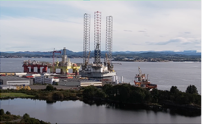
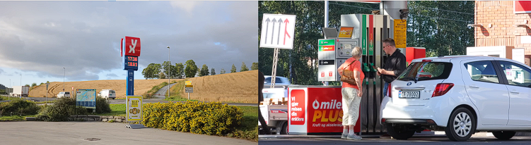
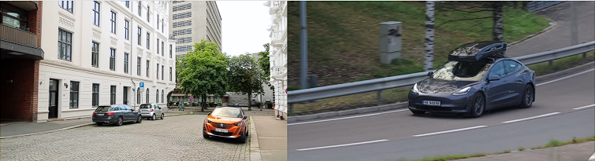
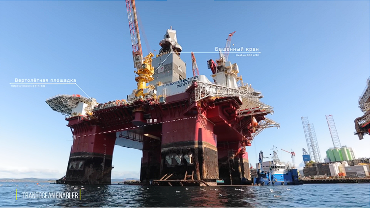
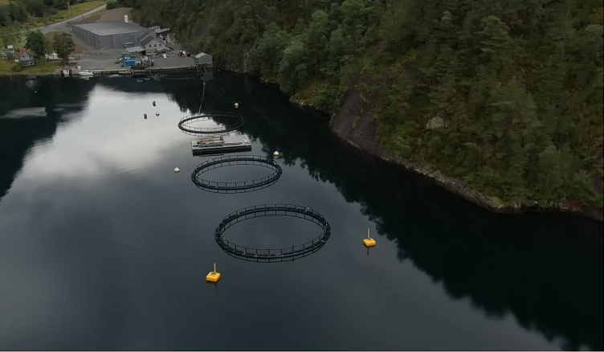
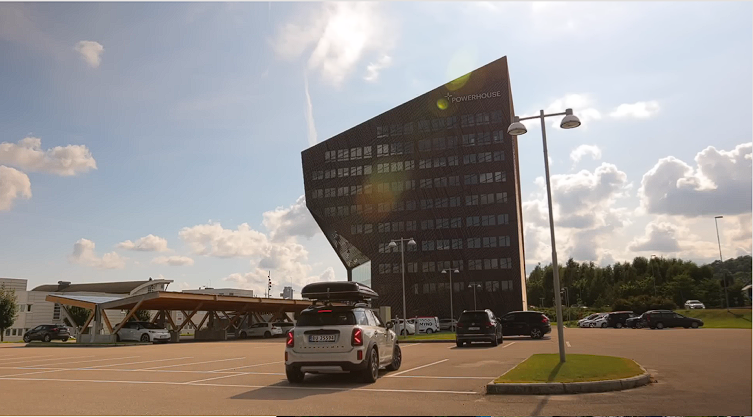
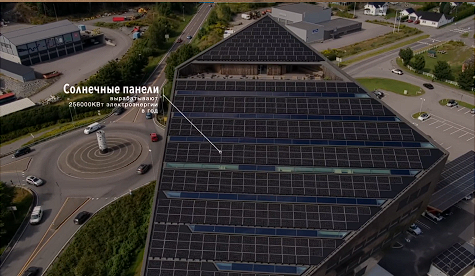
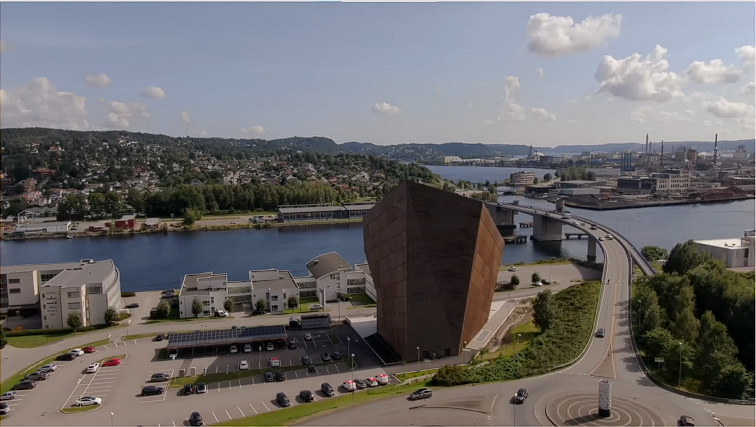

Норвегія сьогодні є економічно розвиненою країною, проте так було не завжди. У минулому Норвегія переживала періоди бідності та нестабільності, що становило значну частину її історії. Колись ця країна була частиною Данії, а згодом Швеції. Основними джерелами доходу для населення тривалий час залишалися сільське господарство та рибальство.Ситуація почала змінюватися в середині минулого століття, хоча навіть тоді Норвегія значно поступалася економічному розвитку Данії та Швеції.Ще в 1950-х роках багато норвежців мігрували до США, що зараз може здаватися несподіваним. Однак на той час це було виправданим кроком.Ключовий поворотний момент настав у 1960-х роках, коли Норвегія відкрила нове джерело багатства — нафту.
У 1969 році поблизу невеликого містечка Ставангер було виявлено велике морське нафтове родовище, за яким згодом знайшли ще більше. Це відкриття стало переломним моментом в історії Норвегії. Сьогодні країна є одним із найбільших виробників нафти й газу в Європі, проте її унікальність полягає в тому, як вона використала ці ресурси.
На відміну від багатьох інших нафтовидобувних країн, Норвегія не пішла шляхом зниження витрат для населення. Замість цього було прийнято рішення уникати прямого вливання нафтових грошей у внутрішню економіку. Це дозволило запобігти інфляції та уникнути ризику, що суспільство стане занадто залежним і розслабленим.Податки та стандартні ціни на бензин залишилися незмінними. Норвегія, ймовірно, є єдиною країною у світі, де навіть за великі обсяги видобутку пального ціни на нього залишаються високими. Наприклад, пальне тут дорожче, ніж у Швеції — країні, яка імпортує його з Норвегії!Мрієте про дешеве пальне? Тоді, можливо, варто звернути увагу на Венесуелу.
Норвегія спрямувала значну частину нафтових доходів на розвиток інфраструктури, а надлишок коштів — у спеціальний інвестиційний фонд, відомий як Національний нафтовий фонд. Сьогодні цей фонд є найбільшим національним фондом у світі, із загальною вартістю понад 1 трильйон доларів США (або близько 1 300 000 000 000 доларів, якщо бути точними).
Електромобілі вже давно не є новиною, але в Норвегії здається, що ви перебуваєте в майбутньому, адже електрокари тут буквально повсюди. Ще у 2020 році країна стала першою у світі, де продажі електромобілів перевищили продажі автомобілів із двигунами внутрішнього згоряння.
Це стало можливим завдяки пільговій політиці — електромобілі звільнені від оподаткування й мають низку додаткових переваг.Опитування місцевих жителів свідчить, що більшість обирають електромобілі не з економічних, а з екологічних міркувань. Цьому сприяє й те, що основна частина енергії в Норвегії виробляється гідроелектростанціями. До 2030 року країна планує повністю забезпечувати свої потреби в енергії за рахунок відновлюваних джерел, ставши ще менш залежною від нафти.Ця стратегія робить Норвегію унікальною серед країн, багатих на нафту й газ. Вона не лише зберегла свої нафтові доходи, але й успішно примножила їх, вкладаючи кошти у майбутнє та забезпечуючи сталий розвиток.
Transocean Enabler — це нафтова платформа останнього покоління, вагою 45 000 тонн, розроблена для роботи в екстремальних умовах Баренцева моря. Вона може вмістити команду з 130 осіб і є справжнім шедевром інженерії.Ця платформа — більше ніж просто бурова установка. Вона зареєстрована як судно і здатна самостійно діставатися до місця роботи.Завдяки спеціальній комп’ютерній системі Transocean Enabler зберігає стабільність навіть при сильному вітрі (до 50 вузлів) і хвилях заввишки 10 метрів.Transocean Enabler здатна бурити як вертикально, так і горизонтально, досягаючи глибини 8500 метрів.Це вражаюче досягнення техніки, і її роботу можна порівняти з рівнем космічних технологій.Панель керування платформи виглядає так, ніби вона створена для геймерів, а комфортні робочі крісла заслуговують окремої уваги. Робота на платформі є фізично та психологічно вимогливою, але графік роботи компенсує ці труднощі.Співробітники працюють два тижні в офшорних умовах, після чого отримують чотири тижні відпочинку. Такий розклад дає достатньо часу для особистих справ чи хобі, оскільки зарплати тут дозволяють не турбуватися про додатковий дохід. Для багатьох це можливість урізноманітнити своє життя між змінами.
Норвегія відома своєю рибою і є світовим лідером у вирощуванні лосося. Значна частина цієї продукції виробляється на спеціальних рибних фермах, подібних до цієї.Рибні ферми в Норвегії представляють собою високотехнологічні комплекси, де створюються ідеальні умови для вирощування лосося. Завдяки суворим стандартам якості та екологічним практикам, норвезький лосось вважається одним із найкращих у світі.Цей сектор відіграє важливу роль в економіці країни та забезпечує високий рівень експорту риби на світовий ринок.
Сьогодні термін "Sustainbale" набув великої популярності і асоціюється з екологічною чистотою, а Норвегія є однією з найбільш екологічних країн у світі.Норвежці активно займаються будівництвом будівель під назвою Powerhouse, які мають негативний викид CO2. Це означає, що такі будівлі виробляють більше енергії, ніж споживають за весь період експлуатації, включаючи процеси будівництва та знесення.
Сонячні панелі покривають не тільки дах, але й фасад будівлі, генеруючи 256 000 кВт енергії на рік і відправляючи зайву енергію назад у мережу, таким чином перетворюючи саму будівлю на електростанцію.Дах оснащений великими вікнами, які забезпечують природне освітлення на трьох верхніх поверхах.
Матеріали будівлі акумулюють тепло протягом дня, а вночі віддають його, підтримуючи комфортну температуру.Опалення будівлі також підтримується за допомогою геотермальних свердловин, розташованих на глибині 350 метрів під землею.Ці технології, які виглядають як частина майбутнього, вже активно використовуються в Норвегії.
